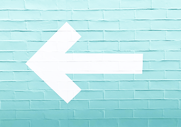
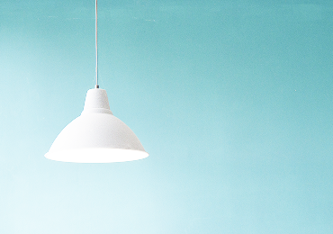
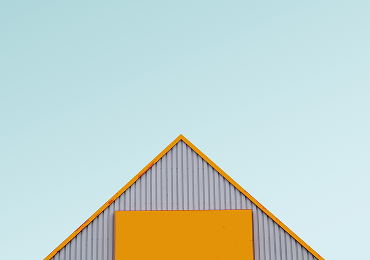

Interface Design
UX traffic light colours
UI has to make a huge visual difference between warning, an alert and a success.
Transformation has to be driven by everybody, not just by climate groups, and we have a responsibility to use our influence to drive this.

Transformation has to be driven by everybody, not just by climate groups, and we have a responsibility to use our influence to drive this.

UI has to make a huge visual difference between warning, an alert and a success.
UI has to make a huge visual difference between warning, an alert and a success.

Is it possible to create a delightful user experience without following best UX practices?
We work with clients around the world from our headquarters in Charleston, South Carolina.
We focus on naming, branding, brand narratives, website design and development, and brand experiences.